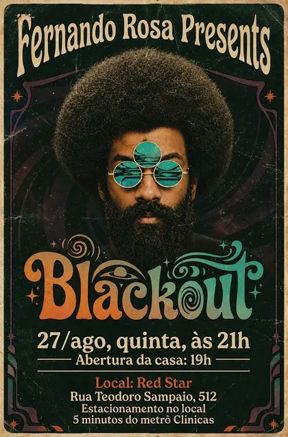

Fernando Rosa
Baixista de Itaquera, na zona leste de São Paulo. Tocou com Lenny Kravitz e tem um show próprio, o BLACKOUT.
Agenda
Shows anteriores

BLACKOUT
É o show solo do Fernando, com clássicos de groove e soul.
Sobre Fernando Rosa
“No palco a gente não toca apenas notas, a gente vive o momento de corpo e alma.”
“On stage, we don’t just play notes, we live the moment body and soul.”

Fernando Rosa nasceu em Itaquera, na zona leste de São Paulo, e pegou gosto pela música nos bailes de garagem da região. Começou a tocar aos 8 anos, trabalha como músico desde os 14 e é autodidata.
Tocou na banda de Ed Motta. Em 2021 passou a ter apoio oficial da Music Man e da Ernie Ball, e a Fender fez para ele um baixo com o nome dele e uma cor só dele, o Fernando Rosa Green.
Na pandemia, começou a publicar vídeos tocando clássicos de funk, soul e disco em casa. Os vídeos chamaram a atenção de Slash, Adam Levine, Duff McKagan e Spike Lee e levaram o trabalho dele para fora do Brasil.
Em 2022 apresentou o projeto ALIVE, com versões próprias de sucessos e Derrick McKenzie, baterista do Jamiroquai, na bateria. Tocou no Teatro Prudential, no Rio, e no Jazz Cafe, em Londres.
O primeiro contato com Lenny Kravitz foi um convite para tocar. Fernando foi a Los Angeles, depois às Bahamas para ensaiar, e fez vários shows com ele, entre eles o iHeartRadio Music Festival de 2023, em Las Vegas, onde tocaram It Ain’t Over ’Til It’s Over.
Em junho de 2025 levou o projeto Funk Ship ao Blue Note São Paulo, de novo com Derrick McKenzie. O show solo dele é o BLACKOUT.
- Instrumento
- Baixo
- Origem
- Itaquera, São Paulo
- Começou
- Aos 8 anos
- Tocou com
- Lenny Kravitz, Ed Motta, Derrick McKenzie
- Projetos
- BLACKOUT, ALIVE, Funk Ship
- Pessoal
- Vegano

Marcas
O que Lenny Kravitz disse sobre ele
“What I love in Fernando’s bass performance is that he is versed in multiple styles and he plays with authenticity. He has a fantastic ability with his hands and most importantly he demonstrates love and joy for his passion for playing.”
Contratação
Para shows, participações e gravações, fale com ele pelo Instagram.
For shows, guest appearances and recording sessions, reach him on Instagram.
A confirmar: e-mail e WhatsApp de booking
- Show solo BLACKOUTo show completo do Fernando
- Participaçãoem show de outro artista, evento ou festival
- Gravaçãobaixo para faixas, em estúdio ou a distância